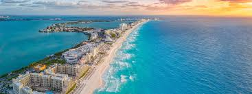

México
Principais do país.
Introdução
O México fica na América do Norte, ao sul dos EUA e ao norte da Guatemala e Belize. A capital é Cidade do México (CDMX). É um país diverso em natureza, cultura e história.

Geografia
O território tem desertos no norte, cadeias de montanhas no centro (Sierra Madre) e áreas tropicais no sul. O país possui longas costas no Oceano Pacífico e no Golfo do México.
- Área aproximada: 1,964 milhão km²
- População: cerca de 129 milhões de habitantes
- Moeda: Peso mexicano (MXN)

História
Antes da colonização, povos como maias e mexicas (astecas) construíram cidades e sistemas agrícolas avançados. Em 1521 ocorreu a conquista espanhola. Em 1821 o país declarou independência.
Momentos importantes
- 1325 — Fundação de Tenochtitlán
- 1810 — Início da luta pela independência
- 1910–1920 — Revolução Mexicana
Cultura
A culinária mexicana é reconhecida mundialmente: tacos, mole, tamales e pozole. O Dia de Muertos é uma festa tradicional com altares e símbolos coloridos. A música de mariachi é um ícone do país.
Economia
A economia é diversificada, com destaque para a indústria automobilística, eletrônicos, petróleo, agricultura (milho, abacate) e turismo.
- Setor primário: milho, frutas, café
- Setor secundário: automóveis, autopeças, eletrodomésticos
- Setor terciário: turismo e serviços
Turismo
Entre os destinos mais procurados estão CDMX, Chichén Itzá, Teotihuacán, Oaxaca, Guanajuato, Cancún e Tulum.
- Patrimônios históricos e arqueológicos
- Praias do Caribe e do Pacífico
- Cidades coloniais coloridas
Links úteis
Mais informações em sites confiáveis: